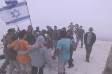

ישיבת חספין - מקום שטוב ללמוד בו עם שאיפה למצוינות, ערבות הדדית וליווי אישי ופרטני ישיבת חספין - מקום שטוב ללמוד בו ישיבת חספין היא ישיבה בה התלמידים לומדים מתוך סקרנות, עניין והנאה. בישיבה מתקיימים שיח והפריה הדדית בין לימודי הקודש בבוקר, לבין לימודי התיכון אחה"צ. אנו עמלים רבות על פיתוח שיטת לימוד פעילה "בית מדרשית" בה אנו מקנים לתלמידים כלים שבעזרתם יוכלו להתקדם וללמוד באופן עצמאי, ולהיות פעילים בתהליך הלמידה. שיטה זו התפתחה מתוך לימודי התנ"ך, וכיום הפכה להיות נחלת מקצועות רבים נוספים. צוות ההוראה בבית הספר הינו איכותי ומקצועי, ושואף גם הוא כל העת להתקדם, להתמקצע ולהתפתח בתחום הפדגוגי. שאיפה למצוינות הישיבה שלנו מעודדת את התלמידים למצוינות אישית ולימודית בתחומי הדעת השונים, כל אחד לפי דרכו וענייננו. בשנת תשע"ד נלמדות בישיבה המגמות הבאות בהיקף של 5 יח"ל: מדעי המחשב, ביולוגיה, פיזיקה, תיאטרון, מדעי החקלאות (מסלול סוסים), כלכלה, מדעי הסביבה, מחשבת ישראל היסטוריה וספרות. בתוך כך שמה הישיבה דגש על מקצועות לימוד מדעיים וטכנולוגיים ברמה גבוהה, לצד העמקה במקצועות הקודש השונים. כ95% מתלמידי הישיבה מסיימים את לימודיהם עם תעודת בגרות עיונית מלאה, כאשר כ70% מהם לומדים תנ"ך בהיקף של 5 יח"ל, 70% מהם לומדים מתמטיקה ברמה של 4 ו 5 יח"ל, ומעל 90% לומדים אנגלית ברמה של 4 ו-5 יח"ל. ערבות הדדית אנו מחנכים את תלמידנו לערבות הדדית ולאחריות חברתית בתחומים שונים, והנושא בא לידי ביטוי גם בתחום הלימודי. אנו מודעים לכך שבכל כיתה ובכל קבוצת לימוד, מפוזרים כישרונות שונים בין התלמידים, ולכן מעודדים את תלמידים לעזור ולהיעזר אחד בשני, וללמוד בחברותות. למידה כזו הינה תמיד יותר יעילה ואפקטיבית, לכל מי ששותף בה. לווי אישי ופרטני מתוך אמונה גדולה בתלמידים שלנו, אנו מקיימים במסגרת התיכון מעטפת לימודית רחבה המאפשרת לכל תלמיד להתקדם ולקבל את הסיוע המדויק הנדרש לו. בשנה זו (תשע"ד) אנו נכנסים לרפורמת אופק חדש ועוז לתמורה, וכחלק מובנה ברפורמות יהיו למורים שעות פרטניות רבות בהן הם יוכלו לקדם תלמידים, מבחינה לימודית, חברתית ואישית. בנוסף, פועלות בישיבה מספר מסגרות שונות נוספות לקידום הפרט: תכנית 'קדם עתידים' אשר מקדמת את התלמידים ברמות הלימוד הגבוהות, תכנית 'הבית הלומד' לקבוצות ברמות נמוכות יותר, 'מערך תמיכה אישי' של עזרה פרטנית וחונכויות וקבוצות השלמת בגרויות. הסיוע הנ"ל ניתן, כמובן, לתלמידים אשר מוכיחים רצינות לימודית ונכונות להשקעה. את המסגרות הללו מוביל צוות עלי"ה – עידוד למידה, ייעוץ והכוונה בראשות הרב שי פרנקל, סגן ראש הישיבה. נאחל לכולנו לימוד פורה ומהנה. בברכה אופיר בן אילוז מנהל התיכון
החינוך בישיבה מבוסס על השילוב בין עם, תורה וארץ. הערכת היחיד והמאפיינים הייחודיים שלו יחד עם דבקות באידיאולוגיות גדולות.
הישיבה נמצאת בחספין שבדרום רמת הגולן. היא משרתת את הצבור הדתי לאומי בגולן ובכל רחבי הארץ. החינוך בישיבה מבוסס על השילוב בין עם, תורה וארץ. הערכת היחיד והמאפיינים הייחודיים שלו יחד עם דבקות באידיאולוגיות גדולות. הישיבה קטנה והצוות גדול. ניתנת תשומת לב רבה לכל אחד מהתלמידים. אווירת הלימודים טובה ותומכת, כשהיא משולבת בנופי הטבע והחברה ברמת הגולן.
דבר מנהל חטיבת ביניים
חטיבת הביניים של הישיבה התיכונית חספין היא חלק אינטגרלי מהישיבה השש שנתית ויחד עם זאת יש לה את העצמאות והייחודיות שלה. מטרתנו היא לאפשר לכל תלמיד לגדול ולצמוח מתוך שמחה ולהוציא לפועל את הכוחות הטמונים בו . אנו רואים בלימודי הקודש המחוברים עם קדושה ויראת שמים בסיס איתן ומשמעותי לפיתוח אישיותו של הנער המתבגר והצמחתו להיות אדם טוב וישר. תכנית הלימודים בחטיבה מגוונת ועשירה ומאפשרת לכל אחד למצות את יכולותיו בצורה המקסימלית. כמעט כל המקצועות נלמדים בהקבצות לימוד ע"פ התאמה לשונות בין התלמידים. בכל שכבה בחטיבה יש גם כתות רגילות וגם כתה מקדמת הנותנת מענה רגשי ולימודי לתלמידי חנ"מ. בנוסף פועל מרכז למידה לתלמידי שילוב לתגבור במקצועות שונים.
"ר' יהודה ר' שמעון ור' יוסי קא אזלא באורחא ..."
משני צינורות יסודיים מקבל האדם שפע וחיים - תורה שבכתב ותורה שבע"פ. שפע אחד מהתורה הכתובה והמסורה מפי עליון, ושפע שני מתושב"ע – התבוננות בטבע, באנשים ובהיסתור-יה הישראלית. התלמידים בישיבתנו מקבלים ומתפתחים משתי בחינות הנ"ל. בחינת תורה שבכתב - בכיתות ומספרי הלימוד. ובחינת תורה שבע"פ - בחינת "קא אזלא באורחא" היו מטיילים בדרך, ונפגשו עם דבר ד' דרך החיים- לימוד של הפתעות, לימוד של התבוננות בטבע לימוד מאנשים שבדרך ועם מה שמסביבנו . אנו משתדלים להפגיש את תלמידנו בלימוד של " אורחא "
ישיבת חיספין - מקום חינוכי לכבוד המחנך, התלמיד, רמת הגולן ומדינת ישראל
יסודות החינוך: מבט ארוך, אמונה ואהבה אנו רוצים להציג בפניך, קורא יקר, את דרכה המיוחדת של הישיבה, שאותה התווה בעמל רב ובמסירות, הרב משה אגוזי, מתוך התבוננות באופן בו אנו מתמודדים עם הדילמה הנצחית של חופש ומחויבות בחינוך. מחד גיסא, אנו מאמינים שהחופש הוא התנאי לצמיחה טבעית של האישיות, לבריאות הנפש, למימוש אישי של כל אדם את שמו המיוחד; אך מאידך גיסא אנו מחויבים: מחויבים למצוות, לקום בבוקר וליטול ידיים, ולברך, ולהתפלל; ומחויבים למערכת: לבוא בזמן, לעמוד בכללי התנהגות ולבוש, לעמוד בסטנדרטים של למידה ועוד. איך יוכלו חופש ומחויבות לדור בכפיפה אחת? דומני, שמתוך התמודדותה עם הדילמה הזו צומחת דרכה הייחודית של הישיבה, ולשמו, כך אני מאמין, באה ישיבת חיספין לעולם.
ישיבת חספין - מקום שטוב ללמוד בו עם שאיפה למצוינות, ערבות הדדית וליווי אישי ופרטני
ישיבת חספין - מקום שטוב ללמוד בו ישיבת חספין היא ישיבה בה התלמידים לומדים מתוך סקרנות, עניין והנאה. בישיבה מתקיימים שיח והפריה הדדית בין לימודי הקודש בבוקר, לבין לימודי התיכון אחה"צ. אנו עמלים רבות על פיתוח שיטת לימוד פעילה "בית מדרשית" בה אנו מקנים לתלמידים כלים שבעזרתם יוכלו להתקדם וללמוד באופן עצמאי, ולהיות פעילים בתהליך הלמידה. שיטה זו התפתחה מתוך לימודי התנ"ך, וכיום הפכה להיות נחלת מקצועות רבים נוספים. צוות ההוראה בבית הספר הינו איכותי ומקצועי, ושואף גם הוא כל העת להתקדם, להתמקצע ולהתפתח בתחום הפדגוגי.